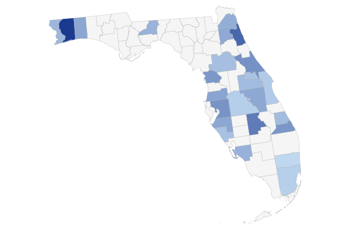
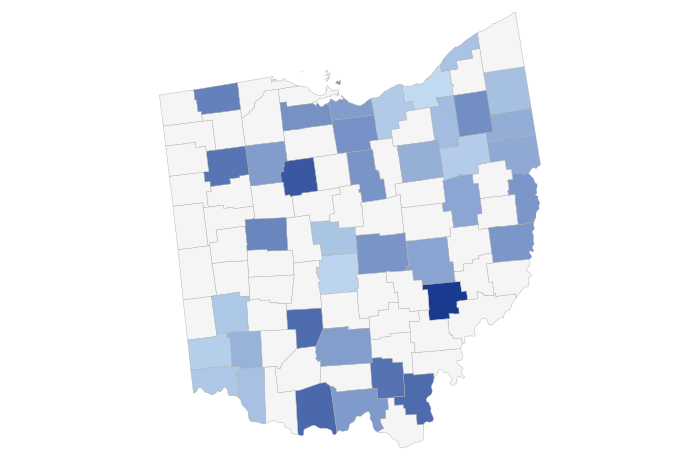
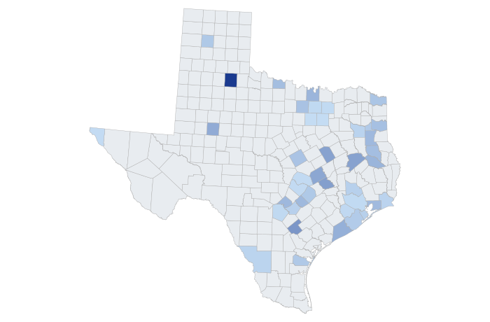

State Highlights
Florida

County incidence (cases per 100k population)
59
total cases
2.9
incidents / yr
3.2
arrests / yr
2.9
convictions / yr
Ohio

County incidence (cases per 100k population)
57
total cases
2.3
incidents / yr
1.7
arrests / yr
2.8
convictions / yr
Texas

County incidence (cases per 100k population)
81
total cases
3.8
incidents / yr
4.3
arrests / yr
3.9
convictions / yr